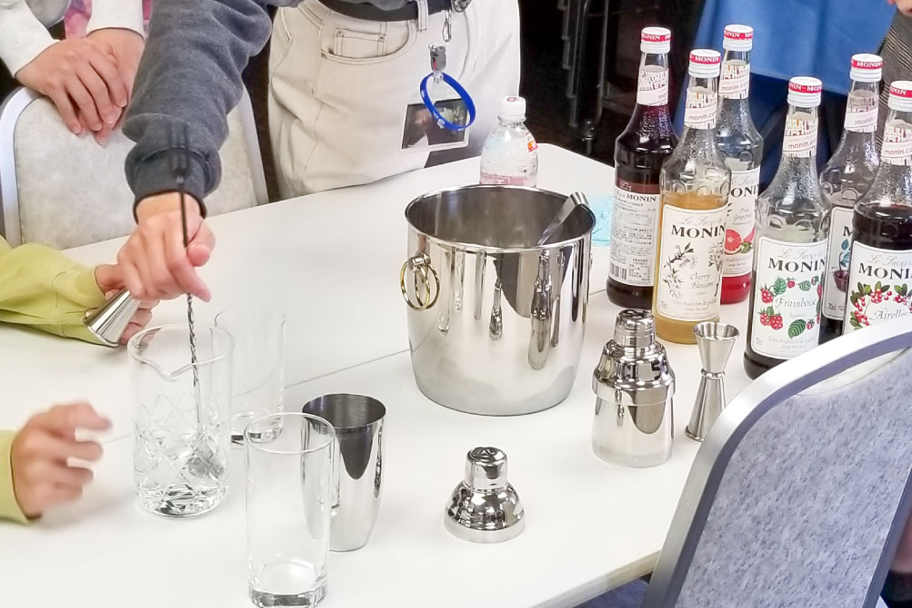
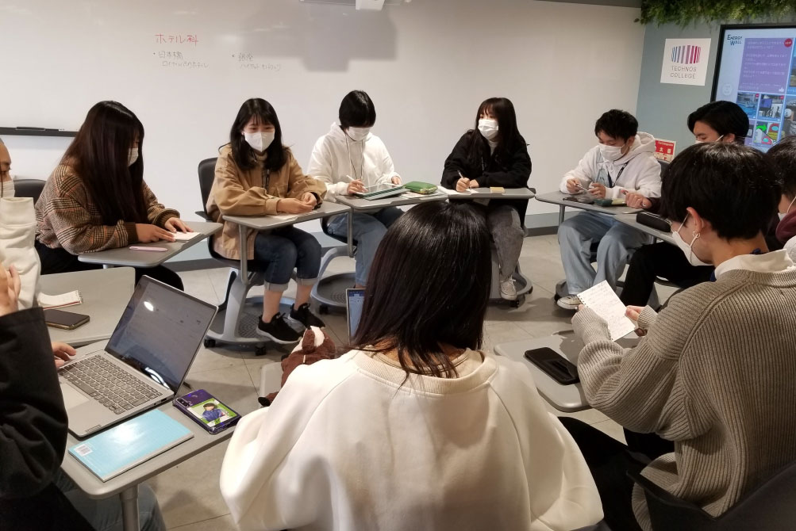
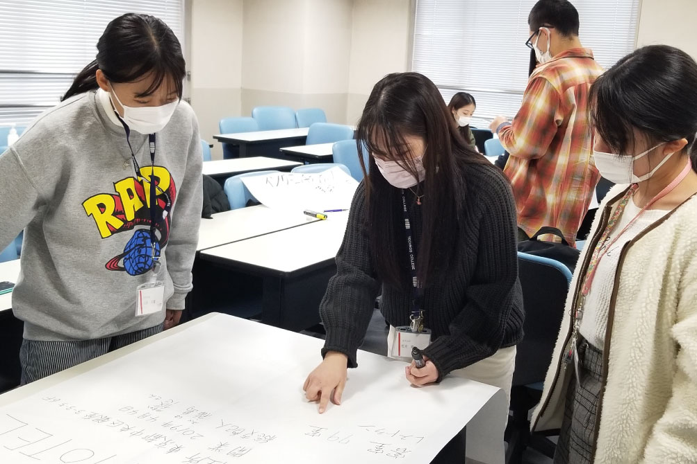

ホテル科
- サービススタッフコース／ホテルビジネス・大学コース
- ホテルビジネスの可能性や
サービスのあり方を探求し
マルチプレイヤーとして活躍する - ライフスタイルやサービスの多様化が進むホテル業界。ホスピタリティを直接提供するオペレーション部門・事業を運営する管理部門にこだわらず、ホテル事業を幅広い視野で捉え、マルチプレイヤーとして活躍できる人材を目指します。
学びPICK UP!
【授業紹介】応用ゼミ～フィールドワーク～ハイアット セントリック 銀座 東京様
ホテル科2年生の応用ゼミでハイアットセントリック銀座 東京様にお邪魔しました♪ いい意味でホテルのイメージを覆す、エッジの効いたファッショナブルなホテルに、学生も驚き！ それぞれのエレベーター...
続きを読む- 【目指せる職種】
- フロント／コンシェルジュ／ドア／ベル／ハウスキーピング／レストランスタッフ／バーテンダー／ソムリエ／バンケットスタッフ／人事／営業／マーケティング／経営企画 他
- 【目指せる資格】
- レストランサービス技能検定／ホテルビジネス実務検定試験（ベーシック）／TOEIC®／実用英語技能検定／観光英語検定／秘書検定／手話技能検定／マナー・プロトコール検定／ホテルビジネス実務検定試験（マネジメント）／MOS 他
- 【主な就職先】
- 帝国ホテル／ホテルオークラ東京／パークハイアット東京／星野リゾート／ハイアットセントリック銀座東京／ホテルニューオータニ／パレスホテル東京／ザ・リッツ・カールトン東京／プリンスホテル／京王プラザホテル／ANAインターコンチネンタルホテル東京／マンダリンオリエンタル東京／ザ・キャピトルホテル東急／シャングリ・ラ ホテル東京／ロイヤルパークホテル／日本ホテル／商船三井客船（ホテルサービスクルー）／うかい／なだ万／藤田観光／ミリアルリゾートホテルズ／シェラトン・グランデ・トーキョーベイ・ホテル／ハレクラニ沖縄／ザ・ペニンシュラ東京／富士屋ホテル／東京ベイ舞浜ホテル／ハウステンボス／ザ・ウィンザーホテル洞爺リゾート＆スパ／宮古島シギラセブンマイルズリゾート／ヨコハマグランドインターコンチネンタルホテル／万平ホテル／ザ・リッツ・カールトン沖縄／浦安ブライトンホテル東京ベイ／東京ディズニーセレブレーションホテル／ロイヤルパークホテル／パークハイアット東京／グランドハイアット東京／キンプトン新宿東京／ホテルオークラアムステルダム（オランダ）／ヒルトン東京お台場／Shangri-La SINGAPORE（シンガポール）／Island Hideaway（モルディブ）／Legund Hotel（ベトナム） 他
コース紹介
サービススタッフコース
現役スタッフによる指導のもと、世界に通じるサービススキルを学び、あらゆるホテルにおいて一流の接客サービスを提供できるホテリエをめざします。
ホテルビジネス・大学コース
「夢はホテルの総支配人！」「海外でも活躍できるホテリエをめざしたい！」そんな皆さんの憧れを叶えるために、テクノスの「知識・技術の専門性」と大学の「幅広い学問と教養」を学修します。
もっと大学コースを知りたい方はコチラ学びの特徴
未来を見据えた
学科オリジナルの学び
本当に活躍できる
ホテルスタッフに
なるための
インターンシップ
複数のホテルでインターンシップを行うことで、サービススキルの習得だけでなくタイプごとに異なるホテルビジネスへの理解を深めることができます。
実際のホテルを調査研究し
これからのホテルに求められる
ビジネスを提案する
都内の一流ホテルの総支配人に向け、そのホテルで販売する新プランを提案！ 今の時代に求められるおもてなしの形や、新たなホテルの可能性を見出し発表します。
身につけたスキルを実践する学科ゼミ
基礎ゼミ
ホテル開発
～ホテル×○○～
あらゆるホテルにおいて一流の接客サービスを提供できるよう、現役のスタッフによる指導のもと世界に通じるサービススキルを学びながら、「泊まるだけじゃない」ホテルのコンセプト、価値づくりに挑戦します。業界理解を深め、チームで協働し、主体的に学び探求する力を身に付け、将来に向けた企業研究につなげ、業界を広く見る目を養います。
応用ゼミ
実際の一流ホテルへ企画提案
マーケティングの理論や手法を学んだうえで、実際のホテルへ新企画の提案を行います。フィールドワークからはじめ、ホテルの方へのリサーチ、課題や新たな可能性の考察など、実働実践型の学習を行います。
身につける力&磨く力

新たなアイデアを
生み出す発想力と
コミュニケーション力
学び方、働き方、暮らし方が多様化する時代において、状況に応じて多様な人々と目標に向かって協働する力が必要とされています。

ホスピタリティマインド
AI化、グローバル化が進む中でも、人にしかできないことがあります。お客様の気持ちを汲み取り、共感し寄り添える、ホスピタリティマインドが大切です。

PCスキル
お客様情報や売上を管理し把握することで、ビジネスマインドを持って最適に、かつスピーディーなサービスを提供できます。
在学生レポート
在学生のキャンパスライフを覗いてみよう
学び最新TOPICS
一覧へ描けるキャリア
卒業後の自分をイメージして、
描きたいキャリアを実現しよう!
「卒後ビジョン」で未来を描き、
夢や目標に向けて学ぶのが、テクノスの学修スタイル。
5年後の「自分のありたい姿」を明確にすることで、
今の自分に必要な力がわかり、
学びのプランを立てやすくなります。
在学生の描いた卒後ビジョンを
自分の「卒後ビジョン」を描くことで、
奨学金にチャレンジできる入学方法＆試験
-
Technos
オーディション入学「卒後ビジョン」を用いたプレゼンテーション型の入学方法。評価に応じて「1年次の学費全額免除」等の支援が受けられます。
Technosオーディション
入学の詳細はコチラ -
特待生試験
「卒後ビジョン」を描くことで、どの入学方法を選択した方でも挑戦可能。評価に応じて、学費負担が軽減されます。
特待生試験の
詳細はコチラ
学生や教員と一緒に描く！ オープンキャンパスの
詳細はコチラ
卒業生レポート
社会で活躍する卒業生のキャリアを知ろう
学びを体験できる
オープンキャンパス
業界・学科
体験メニュー
-
ホテルスタッフは、なぜサービスの達人なのか？
 テクノロジーが進化する今だから、人間にしかできない思いやり、心配りのサービスを学ぶ実習体験。
-
こんなホテルがあったのか！！新感覚ホテル
 世界のトレンドホテルについてクイズ形式で学びます。ホテル＝泊まるところというイメージを壊し、ホテルの新たな利用価値やデスティネーションとしての在り方を知ろう。
-
ホテルが日本を救う！？ホテルの新たな可能性
 地方再生、SDGs、少子高齢化・・・未来を見据え、近年叫ばれる社会問題をホテルという切り口でとらえ、それらの解決の一助となるホテルステイについて、調べて、知って、考えてみる。
よくある質問
学科Q&A
高校生からの質問
- どんな資格取得ができますか？
-
レストランサービス技能検定、ホテルビジネス実務検定、TOEIC®、実用英語技能検定、秘書検定など就職活動にアピールでき、就職後の実務にも役立つ多くの資格にチャレンジ出来ます。
- アルバイトはできますか？
-
可能です。自身でスケジュール管理をし、多くの学生がアルバイトと学業を両立しています。都内の一流ホテルでのアルバイトや、長期休暇中のリゾートホテルでのアルバイトも可能です。
- 1クラス何人ですか？ 男女比はどれくらいですか？
-
年度にもよりますが1クラス20人前後の少人数制を取り入れています。女性約6割：男性約4割です。
- インターンシップ先はどのように決まりますか？ なぜ他校と違って期間が短いのですか？
-
事前のアンケートで自分の希望を申告し、その中から決定します。期間を短くすることで、異なる形態の複数のホテルで経験を積むことが可能になり、幅広い視野を持ち自分の適性を知ることができ、就職先の選定にも活かせると考えています。
保護者からの質問
- 学費以外にかかる費用は？
-
教科書・教材費、諸経費がかかります。また希望者のみですが、学費に含まれない各種検定料、留学費は別途かかります。
- 業界の未来は？
-
コロナウイルス感染症による影響が大きいホテル業界ですが、ポストコロナを見据えて国の観光立国を目指す施策も加速することが期待されています。多くの新規ホテルオープンも予定されており、明るい未来が待っていると考えています。
- みんなホテル業界に就職していますか？
-
長年にわたりホテル業界への就職実績を確実に積み重ねており、数多くの卒業生が各ホテルの第一線で活躍しています。旅行業等、関連業界への就職も毎年続いています。また総合学院であるテクノスカレッジは、自分の目指す業界にとどまらず様々な業界へのチャレンジすることも可能です。内定をゴールではなく、社会に出た後で本当に活躍できる人材を育成するために、学生の適性に沿った就職指導を心がけています。
- 地方出身者の割合は？
-
毎年約2割から、多い年では約4割です。オープンキャンパスに参加することで、入学前に知り合いになることができているようです。